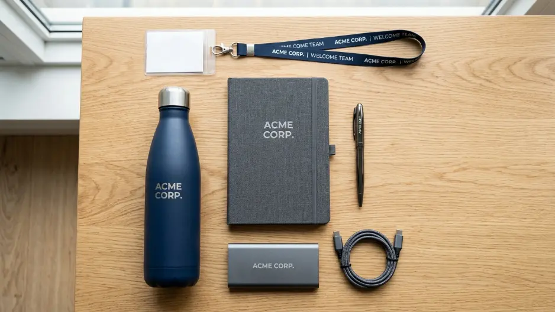
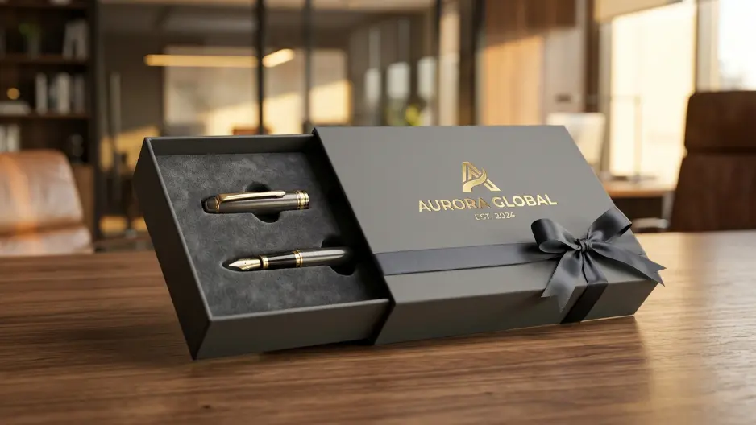

Onboarding gift set adalah paket hadiah korporat yang diberikan kepada karyawan baru pada hari pertama atau minggu pertama bekerja sebagai bentuk sambutan resmi dari perusahaan.
Souvenir Kantor Jakarta menyediakan onboarding gift set yang dapat dikustomisasi sesuai identitas perusahaan Anda.
Apa Itu Onboarding Gift Set?
Onboarding gift set adalah kumpulan barang yang disusun khusus sebagai hadiah penyambutan bagi karyawan yang baru bergabung dengan perusahaan, umumnya diberikan pada hari pertama atau minggu pertama masa kerja.
Berbeda dengan gift set apresiasi yang diberikan atas pencapaian tertentu, onboarding gift set memiliki tujuan utama untuk menciptakan kesan pertama yang positif serta mempercepat rasa keterikatan karyawan baru terhadap budaya perusahaan.
Laporan tren employee onboarding 2025 mencatat bahwa lebih dari 55 persen perusahaan di kawasan urban Asia Tenggara telah mengintegrasikan elemen welcome kit fisik ke dalam proses onboarding karyawan baru mereka.
Studi lain mengenai new hire experience 2024 menunjukkan bahwa karyawan yang menerima sambutan formal, termasuk hadiah fisik, cenderung melaporkan pengalaman onboarding yang lebih positif dibandingkan yang tidak menerima elemen sambutan tersebut.
Onboarding gift set dapat digunakan dalam berbagai konteks perekrutan, mulai dari penyambutan karyawan tetap, program magang, hingga perekrutan karyawan remote yang bekerja dari lokasi berbeda.
Bagi perusahaan di Jakarta, memesan Souvenir Kantor Jakarta memudahkan proses personalisasi dan distribusi gift set secara lebih cepat dan terkoordinasi.

Kombinasi perlengkapan kerja fungsional dan merchandise custom menciptakan pengalaman onboarding yang berkesan.
Mengapa Onboarding Gift Set Penting untuk Kesan Pertama Karyawan?
Onboarding gift set penting untuk kesan pertama karyawan karena momen awal bekerja menjadi titik krusial dalam membentuk persepsi karyawan terhadap budaya dan nilai perusahaan.
Kesan pertama yang positif pada hari pertama kerja dapat memengaruhi tingkat kenyamanan dan keterikatan karyawan baru dalam beberapa bulan pertama masa kerjanya.
Pemberian onboarding gift set menunjukkan bahwa perusahaan telah mempersiapkan kedatangan karyawan tersebut secara serius, bukan sekadar proses administratif rutin.
Pembahasan lebih rinci mengenai isi onboarding gift set yang efektif dapat ditemukan pada artikel isi onboarding gift set untuk kesan pertama karyawan baru, yang mengulas kombinasi barang yang relevan untuk momen penyambutan.
Bagaimana Memilih Onboarding Gift Set yang Tepat?
Memilih onboarding gift set yang tepat dilakukan dengan mempertimbangkan jenis pekerjaan karyawan baru, format kerja yang akan dijalani, dan pesan pengenalan budaya perusahaan yang ingin disampaikan.
Karyawan dengan format kerja di kantor umumnya menerima onboarding gift set yang lebih menekankan barang fungsional untuk aktivitas kerja sehari-hari, sementara karyawan dengan format kerja remote atau hybrid memerlukan penyesuaian tersendiri agar kesan sambutan tetap terasa meskipun tidak berada di lokasi kantor secara langsung.
Uraian lengkap mengenai penyesuaian onboarding gift set untuk karyawan remote dan hybrid tersedia pada artikel onboarding gift set untuk karyawan remote dan hybrid, yang membahas pertimbangan khusus untuk format kerja tersebut.
Bagaimana Onboarding Gift Set Mempercepat Adaptasi Karyawan Baru?
Onboarding gift set dapat mempercepat adaptasi karyawan baru dengan memberikan pengenalan awal terhadap identitas, nilai, dan budaya kerja perusahaan sejak hari pertama bergabung.
Proses adaptasi karyawan baru umumnya melibatkan pemahaman terhadap norma kerja, identitas visual perusahaan, dan hubungan awal dengan rekan kerja.
Elemen dalam onboarding gift set, seperti panduan singkat perusahaan atau merchandise bertema identitas korporat, dapat membantu mempercepat proses pengenalan tersebut secara halus dan tidak formal.
Penjelasan lebih mendalam mengenai dampak onboarding gift set terhadap kecepatan adaptasi karyawan baru dapat dibaca pada artikel cara onboarding gift set mempercepat adaptasi karyawan baru.

Personalisasi logo dan kemasan eksklusif memperkuat identitas brand perusahaan sejak hari pertama kerja.
Apa Perbedaan Onboarding Gift Set dengan Gift Set Apresiasi Karyawan?
Perbedaan utama onboarding gift set dengan gift set apresiasi karyawan terletak pada konteks dan tujuan pemberiannya, meskipun keduanya termasuk kategori gift set korporat untuk karyawan.
Onboarding gift set diberikan pada momen awal masa kerja dengan tujuan menyambut dan mengenalkan budaya perusahaan, sedangkan gift set apresiasi diberikan sebagai respons atas kontribusi atau pencapaian yang telah ditunjukkan karyawan.
Perbedaan konteks ini memengaruhi isi paket, di mana onboarding gift set cenderung menekankan elemen pengenalan, sementara gift set apresiasi lebih menonjolkan elemen pengakuan atas kinerja.
Apa Saja Faktor yang Memengaruhi Kesan Onboarding Gift Set?
Kesan onboarding gift set dipengaruhi oleh ketepatan waktu pemberian, relevansi isi paket dengan kebutuhan kerja karyawan baru, dan konsistensi elemen identitas perusahaan pada kemasan.
Pemberian gift set yang tertunda hingga beberapa minggu setelah karyawan bergabung dapat mengurangi dampak positif dari momen penyambutan tersebut.
Selain itu, isi paket yang tidak relevan dengan kebutuhan kerja karyawan baru berpotensi mengurangi manfaat fungsional dari gift set, meskipun tujuannya tetap sebagai simbol sambutan.
Kesalahan Umum dalam Menyusun Onboarding Gift Set
Kesalahan umum dalam menyusun onboarding gift set meliputi waktu pemberian yang terlambat, isi paket yang kurang relevan dengan kebutuhan kerja, dan minimnya elemen pengenalan identitas perusahaan.
Beberapa perusahaan cenderung menyamaratakan isi onboarding gift set tanpa mempertimbangkan format kerja karyawan baru, seperti kebutuhan karyawan remote yang berbeda dari karyawan di kantor.
Kesalahan lain adalah tidak menyertakan elemen pengenalan budaya perusahaan, sehingga gift set hanya berfungsi sebagai barang fungsional tanpa nilai tambah pengenalan identitas korporat.
Bagaimana Cara Memesan Onboarding Gift Set di Jakarta?
Pemesanan onboarding gift set di Jakarta dapat dilakukan melalui layanan Souvenir Kantor Jakarta, yang menyediakan proses konsultasi kebutuhan, personalisasi desain, hingga pengiriman langsung ke lokasi kantor atau alamat karyawan baru.
Proses biasanya diawali dengan diskusi mengenai jumlah karyawan baru, format kerja, dan elemen identitas perusahaan yang ingin ditonjolkan.
Tim penyedia kemudian menyusun kombinasi barang serta desain personalisasi sebelum memasuki tahap produksi dan pengiriman.
Jika perusahaan Anda sedang menyiapkan program onboarding karyawan baru, tim Souvenir Kantor Jakarta siap membantu menyusun onboarding gift set yang mencerminkan sambutan hangat perusahaan Anda.
Hubungi kami sekarang untuk konsultasi dan penawaran onboarding gift set.
Kesimpulan
Onboarding gift set merupakan elemen penting dalam membangun kesan pertama yang positif bagi karyawan baru apabila direncanakan dengan mempertimbangkan waktu pemberian, relevansi isi paket, dan elemen pengenalan identitas perusahaan.
Perusahaan yang ingin menghadirkan pengalaman onboarding yang berkesan dapat mulai dengan menentukan format kerja karyawan baru, menyesuaikan isi gift set, dan bekerja sama dengan penyedia Souvenir Kantor Jakarta yang berpengalaman menangani kebutuhan korporat.
FAQ
Apa itu onboarding gift set?
Onboarding gift set adalah paket hadiah yang diberikan kepada karyawan baru pada hari pertama atau minggu pertama bekerja sebagai bentuk sambutan resmi dari perusahaan.
Kapan waktu tepat memberikan onboarding gift set?
Waktu tepat memberikan onboarding gift set adalah pada hari pertama atau minggu pertama masa kerja karyawan baru, agar kesan sambutan tetap relevan dengan momen tersebut.
Apakah onboarding gift set berbeda dengan gift set apresiasi karyawan?
Ya, onboarding gift set berfokus pada penyambutan dan pengenalan budaya perusahaan, sedangkan gift set apresiasi diberikan atas pencapaian atau kontribusi karyawan.
Apakah onboarding gift set bisa dipersonalisasi dengan logo perusahaan?
Ya, sebagian besar penyedia onboarding gift set di Jakarta menawarkan opsi personalisasi logo melalui cetak, ukir, atau emboss pada produk.
Apakah Souvenir Kantor Jakarta melayani pemesanan onboarding gift set dalam jumlah besar?
Ya, layanan Souvenir Kantor Jakarta dapat melayani pemesanan onboarding gift set dalam berbagai skala, mulai dari perekrutan individu hingga gelombang perekrutan besar.